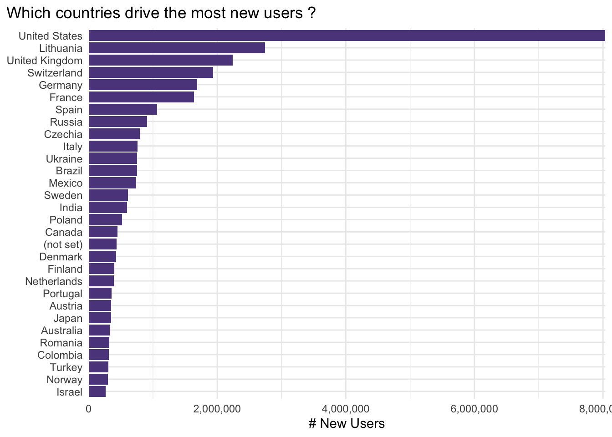

Code
medium_country_raw |>
filter(country == "Croatia") |>
arrange(desc(revenue)) |>
datatable()In this section I will try to look at the medium_country data from a level higher - aggregated per country. I would like to see first a high-level intro to the data, see which countries drive the most users and revenue, try to identify a subset on which I can focus the analysis and lastly - try to give an advise to our client by just looking at this level.
The source file contains data on 240 in total and e.g. looks like this for Croatia
medium_country_raw |>
filter(country == "Croatia") |>
arrange(desc(revenue)) |>
datatable()The data is on country / medium level so I would like to collapse it down to just the country level grouping first and compute some additional high-level metrics.
by_country <-
medium_country_raw |>
group_by(country) |>
summarise(
# summable-metrics
across(
c(users, new_users, sessions, transactions, revenue),
sum
),
# take medians for the rates, shares, durations
across(
c(bounce_rate, pages_session, avg_session_duration, ecommerce_conversion_rate),
median
)
) |>
ungroup() |>
# calculate new columns
mutate(
revenue_per_transaction = revenue / transactions,
new_users_share = new_users / users
)
by_country |> filter(country == "Croatia")# A tibble: 1 × 12
country users new_users sessions transactions revenue bounce_rate
<chr> <dbl> <dbl> <dbl> <dbl> <dbl> <dbl>
1 Croatia 60641 50819 93592 2168 593839. 0.504
# ℹ 5 more variables: pages_session <dbl>, avg_session_duration <dbl>,
# ecommerce_conversion_rate <dbl>, revenue_per_transaction <dbl>,
# new_users_share <dbl>Are there countries with very very low volume of transactions or users ?
by_country |>
select(users, transactions, revenue) |>
map(quantile, probs = seq(0, 1, 0.05))$users
0% 5% 10% 15% 20% 25% 30%
2.00 74.50 385.00 568.50 974.80 1336.00 1786.10
35% 40% 45% 50% 55% 60% 65%
2479.10 3462.40 4153.70 7831.00 11915.15 18281.60 31478.55
70% 75% 80% 85% 90% 95% 100%
45452.50 72587.00 121966.20 256002.05 377302.90 824808.15 8390796.00
$transactions
0% 5% 10% 15% 20% 25% 30% 35%
0.00 2.00 7.90 11.70 23.80 33.00 42.80 58.65
40% 45% 50% 55% 60% 65% 70% 75%
83.20 106.55 168.00 274.25 395.40 642.50 1120.60 1936.00
80% 85% 90% 95% 100%
3442.80 6892.75 12443.30 21468.00 293169.00
$revenue
0% 5% 10% 15% 20% 25%
0.000 1010.094 3536.412 6083.276 11729.995 18284.208
30% 35% 40% 45% 50% 55%
25438.798 34884.987 47421.774 58671.711 78038.093 111281.571
60% 65% 70% 75% 80% 85%
156957.122 234950.814 385850.104 701653.123 901895.735 2206571.170
90% 95% 100%
3484899.314 5879185.640 83228820.262 Based on this quick checks I am inclined to set a very simple rule revenue > 20,000 . I can go back to revise this later if needed - as well as look more into the lower revenue countries to see if there is something to be said for them separately.
The removed countries seem to be indeed small countries.
by_country |> filter(revenue < 20000)# A tibble: 63 × 12
country users new_users sessions transactions revenue bounce_rate
<chr> <dbl> <dbl> <dbl> <dbl> <dbl> <dbl>
1 American Samoa 141 133 205 0 0 0.380
2 Anguilla 441 363 672 10 7993. 0.317
3 Benin 1702 1535 2413 9 2688. 0.544
4 Bhutan 309 279 378 7 4890. 0.571
5 Botswana 1654 1491 2330 33 14189. 0.400
6 British Indian Oce… 14 12 16 0 0 0.661
7 Burkina Faso 1216 1109 1755 25 14804. 0.372
8 Burundi 769 677 1156 14 7251. 0.533
9 Caribbean Netherla… 717 614 1029 18 7652. 0.413
10 Central African Re… 506 448 928 13 17920. 0.561
# ℹ 53 more rows
# ℹ 5 more variables: pages_session <dbl>, avg_session_duration <dbl>,
# ecommerce_conversion_rate <dbl>, revenue_per_transaction <dbl>,
# new_users_share <dbl>Going to try and plot the revenue, transactions, users on a map of the world - just to see how does it look like, where is the volume concentrated etc.
211 codes from your data successfully matched countries in the map
29 codes from your data failed to match with a country code in the map
32 codes from the map weren't represented in your data
I will start with the following simple rule - either revenue more than €20,000 or users or transactions volume b bigger than 500 (i will come back to adjust these in case there is still lots of noise or conversely i am missing some granularity)
by_country <- by_country |>
filter(
(revenue > 20000) | (users > 500) | (transactions > 500)
)Which countries drive the most users ?
by_country |>
slice_max(order_by = users, n = 30) |>
mutate(country = fct_reorder(country, users)) |>
ggplot(aes(x = users, y = country)) +
geom_col() +
scale_x_continuous(labels = comma_format(), expand = c(0, 0.3)) +
labs(
title = "Which countries drive the most users ?",
x = "# Users",
y = NULL
) +
theme_minimal()It seems that it is similar for new users.
by_country |>
slice_max(order_by = new_users, n = 30) |>
mutate(country = fct_reorder(country, new_users)) |>
ggplot(aes(x = new_users, y = country)) +
geom_col() +
scale_x_continuous(labels = comma_format(), expand = c(0, 0.3)) +
labs(
title = "Which countries drive the most new users ?",
x = "# New Users",
y = NULL
) +
theme_minimal()
And I expect the same picture more or less for revenue
by_country |>
slice_max(order_by = revenue, n = 30) |>
mutate(country = fct_reorder(country, revenue)) |>
ggplot(aes(x = revenue, y = country)) +
geom_col() +
scale_x_continuous(labels = comma_format(), expand = c(0, 0.3)) +
labs(
title = "Which countries drive the most revenue ?",
x = "€ Revenue",
y = NULL
) +
theme_minimal()I noticed something interesting here - Lithuania which was one of the top drivers for (new) users - in terms of revenue dropped significantly. I also have the sense that Australia - which was not even on the top 30 charts in terms of (new) users - jumped straight to the middle when we switched to revenue-view.
I would like to check this bit more in detail by ranking the countries with respect to these metrics and checking a bit the difference in these ranks.
country_ranks <- by_country |>
mutate(
across(
c(users, transactions, revenue),
~ dense_rank(desc(.x)),
.names = "{col}_rank"
)
) |>
select(country, ends_with("rank")) |>
arrange(transactions_rank)
datatable(country_ranks)I would like to see which countries have either:
country_ranks |>
mutate(
ranks_diff = abs(users_rank - revenue_rank),
users_to_revenue_rank_ratio = users_rank / revenue_rank
) |>
filter(
ranks_diff > 20 | users_to_revenue_rank_ratio >= 2
) |>
datatable()Indeed it seems there are some interesting cases here:
Once more i want to make sure Lithuania is strange and compare against e.g.
# A tibble: 2 × 12
country users new_users sessions transactions revenue bounce_rate
<chr> <dbl> <dbl> <dbl> <dbl> <dbl> <dbl>
1 Germany 1889501 1687855 2845711 48819 12906843. 0.560
2 Lithuania 2773044 2745659 2867737 3440 786699. 0.472
# ℹ 5 more variables: pages_session <dbl>, avg_session_duration <dbl>,
# ecommerce_conversion_rate <dbl>, revenue_per_transaction <dbl>,
# new_users_share <dbl>Comparing the ratio of users vs. ratio of revenue for Lithuania vs. Germany
compare_users <- by_country |>
filter(country %in% c("Lithuania", "Germany")) |>
select(country, users) |>
deframe()
compare_revenue <- by_country |>
filter(country %in% c("Lithuania", "Germany")) |>
select(country, revenue) |>
deframe()
c(
users = compare_users,
users_ratio = compare_users["Lithuania"] / compare_users["Germany"],
revenue = compare_revenue,
revenue_ratio = compare_revenue["Lithuania"] / compare_revenue["Germany"]
) |>
prettyNum(scientific = F) users.Germany users.Lithuania users_ratio.Lithuania
"1889501" "2773044" "1.467607"
revenue.Germany revenue.Lithuania revenue_ratio.Lithuania
"12906843" "786699.1" "0.06095209" Ok this is confirmation enough i guess - Lithuania is ~140% bigger than Germany in terms of bringing users to the client’s website - however it is strangely 6% of the revenue that Germany brings !?
# A tibble: 1 × 1
n_countries
<int>
1 206I would like to try out the following
1 in N people from Country-A has purchased with the client in 2022.Proportion of population that participated in tourism
More concretely:
library("openintro")
library("eurostat")
# total population of countries
world_pop <- openintro::world_pop
country_population <-
world_pop |>
as_tibble() |>
select(country, year_2020) |>
rename(population = year_2020)
# prorortion of population that participates in tourism
country_tourists <-
get_eurostat("tour_dem_totot") |>
label_eurostat() |>
filter(
duration == "1 night or over",
c_dest == "All countries of the world",
unit == "Number",
time == ymd(20210101)
)|>
select(geo, time, values) |>
rename(country = geo, tourists = values)
# transactions ~ # of customers from country for our client
country_customers <-
by_country |>
filter(country != "(not set)") |>
slice_max(order_by = transactions, n = 10) |>
select(country, transactions, revenue, revenue_per_transaction) |>
rename(customers = transactions)
# stick it all together
country_penetration <-
country_customers |>
left_join(country_population, join_by(country)) |>
left_join(country_tourists, join_by(country)) |>
mutate(
customers_share = customers / tourists,
one_in_N_tourists_has_transacted = floor(1 / customers_share),
customers_share = percent_format(accuracy = 0.001)(customers_share)
) |>
arrange(desc(customers_share))
datatable(country_penetration)Not all countries got matched - the tourism data is only for EU but that would do.
country_penetration |>
filter( !is.na(one_in_N_tourists_has_transacted) ) |>
select(
country,
customers,
tourists,
one_in_N_tourists_has_transacted,
customers_share,
revenue,
revenue_per_transaction
) |>
datatable()If my logic and flow are correct - the situation is as following:
Assuming these 2 are comparable markets, where our client has similar marketing initiatives, efforts, spend etc.
The argument would be - If we could get the same market penetration in Germany as we have in France - for instance by using the same “marketing playbook” they did in France. Then they could potentially increase their market penetration in Germany from 0.104% -> 0.158% .
This would mean 7.4251454^{4}
# numbers from table above
current_revenue_germany <- 12906843
current_customers_germany <- 48819
current_revenue_per_customer_germany <- 264
tourists_germany <- 46994591
# the current and "hypothetical" customer share
# the client could achieve
current_customer_share_germany <- 0.00104
potential_customer_share_germany <- 0.00158
# potential customers if increase happens
potential_customers_germany <- floor(
potential_customer_share_germany * tourists_germany
)
# potential revenue that follows from above
potential_revenue_germany <- (
current_revenue_per_customer_germany * potential_customers_germany
)
# extra cash and uplift in revenue in Germany
c(
increase_abs = comma_format(suffix = "€")(
potential_revenue_germany - current_revenue_germany
),
uplift = percent_format(accuracy = 0.01)(
(potential_revenue_germany - current_revenue_germany) / current_revenue_germany
)
)increase_abs uplift
"6,695,421€" "51.87%"